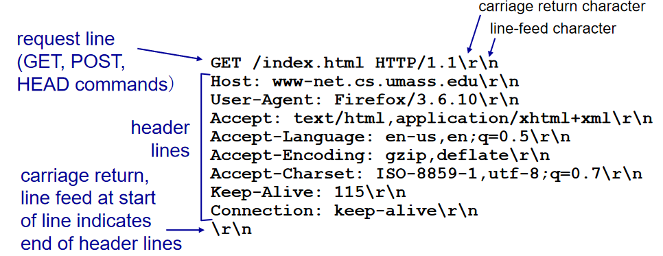

应用层协议原理
网络应用程序体系结构（application architecture）
定义：由应用程序研发者设计，规定如何在各种end system中组织该应用程序
主要有两种体系结构：客户——服务器体系结构（client-server architecture）， 对等体系结构（P2P）
client-server architecture。client之间不能通信，可能间歇性的与server连接，可能有着动态IP地址。Server，一直在线，一般静态IP地址，扩展的数据中心。
一般来说server会形成data center以保障承受大量的数据。
P2P体系结构（P2P architecture），有一个特点，对于data cneter的专用服务器有最小的依赖。
与client-server architecture不同，每个end system彼此既是server又是client，这也就说它们彼此之间可以随意连接。同时，它们并不是实时在线。它们有一个很特殊的特征 **自拓展性(self-scalability)**。self-scalibilty带来了新的服务能力和新的需求。
进程通信
我们知道一个end system一般会有多个程序，那么它们之间是如何通信的。严谨点说程序之间的通信实际上是进程（process）之间的通信。不同之间的process通过message进行通信。
在一对process通信的过程中，发起通信的process被标记为client，在会话开始时等待连接的进程是server。比如，web浏览器和web服务器
我们知道process存在在application layer，所以我们进行不同end system之间的通信时，必须要经过下层的layer。process通过一个成为 套接字（socket） 的软件接口向网络发送报文和从网络接收报文，简单地说与transmission layer进行通信。
由于socket建立在网络应用程序的可编程接口，因而又被称为应用程序与网络之间的 应用程序编程接口（Application Programming Interface，API）
当我们需要进行不同end system之间的process通信时，我们需要两个信息。（1）end system的地址，IP地址（2）在目的end system中指定接收Process的标识符。端口号（port number） 。
可供应用程序使用的运输服务
应用程序服务的需求可以分为：可靠数据传输、吞吐量、定时、安全性
可靠数据传输（reliable data transfer） 确保应用程序的一端发送的数据正确、完全地交付给该应用程序的另一端。
当transmission layer无法提供reliable data transfer时，有可能被 容忍丢失的应用（loss-tolerant application）所接受。
吞吐量，就是发送process能狗向接收Process交付比特的速率。
这就产生一个需求，transmission layer可以以每种特定的速率提供确保的吞吐量。对吞吐量有需求的应用称为 带宽敏感的应用（bandwidth-senstive application） 。
定时，比如发送方注入进socket的每一个比特到达接收方的socket不迟于100ms。
安全性，transmission layer为应用程序提供一种或多种安全性服务。
因特网提供的运输服务
TCP，UDP
TCP，包括面向连接服务和可靠数据传输服务。
面向连接服务：TCP让client和server相互交换运输层控制信息，这被称为握手过程。握手后TCP Connection就在两个process的socket之间建立了。这个连接是全双工的。
可靠的数据传送服务：process 通信可以依靠TCP，无差别、按适当顺序支付所有发送的数据。
此外TCP还有拥塞控制。
为保障通信的安全，我们使用 安全套接字层（secure sockets layer,SSL）
UDP是一种不提供不必要服务的轻量级运输协议。它是一种不可靠的传输协议，不提供拥塞控制。
从上面的描述中我们可以看出现在的设计可以保障reliable data transfer 和 安全性（SSL），同时现在可以满足时间敏感应用提供满意服务，但是不能提供任何定时和带宽保证。
应用层协议（application layer protocol）
application layer protocol定义了运行在不同end system上的应用程序process如何互相传递message。
定义了，交换的报文类型，比如请求报文和响应报文。
各种报文类型的语法。
字段的语义，
确定一个进程何时以及如何发送报文，对报文的响应规则
HTTP
概述
Web的应用层协议是 超文本传输协议（HyperText Transfer Protocol，HTTP）
Web页面（Web page）是由对象组成的。一个object可以是一个文件、图片等。
HTTP定义了Web客户向Web Server请求Web page的方式，以及Server想client发送Web page的方式。
HTTP使用TCP作为他的支撑传输协议。
HTTP协议不用担心数据丢失，也不关注TCP从网络数据丢失和乱序故障中恢复的细节。这也是protocol slack分层的好处。每一层只需要关注自己的事情，下层的事情无需关心，有点类似OOP
HTTP是一个 无状态协议（stateless protocol）
非持续连接和持续链接
非持续连接（non-persistent connection）：每个请求/响应对经一个单独的TCP连接发送。
持续连接连接（persistent connection）：所有请求以及响应经相同的TCP连接发送。
HTTP既能使用non-persistent connection和persistent connection
non-persistent connection HTTP的过程
（1）HTTP client在端口80向server发送一个TCP连接，client与server都有一个套接字与该连接相关联。
（2）HTTP client经它的套接字向server发送一个HTTP请求报文
（3）HTTP server从socket中接受这个请求，然后搜索请求的对象，并在HTTP响应报文中封装这个对象，从socket中发送出去。
（4）HTTP client process通知TCp断开此TCP连接。
（5)HTTP sever process关闭TCP连接。
往返时间（Round-Trip Time） ，该时间是指一个短分组从客户到服务器然后再返回client的时间。RTT包括processing delay、queuing delay、分组时延。
三次握手中前两个部分所消耗的时间占用一个RTT。完成三次握手的前两个部分后，客户结合三次握手的第三部分（确认）向该TCP连接发送一个HTTP请求报文。
简单地说总的响应时间是两个RTT加上服务器传输HTTP文件的时间
persistent connection HTTP，建立TCP连接后服务器做出响应后不会关闭TCP而是保持TCP连接此后请求与响应还能通过相同的连接进行传送。
一般来说，如果一条连接经过一定时间间隔仍未被使用，HTTP服务器就关闭该连接。
HTTP报文格式
首先是请求报文

第一行被称为 请求行（request line）。
其余后继的行被称为 首部行（header line）
请求被分为三个字段，方法字段，URL字段和HTTP版本字段。
总体结构如下，一般来说POST报文比起get报文会有一个实体体，这个实体体一般包含的是用户在表单字段中的输入值。
POST method:
web page often includes form input
input is uploaded to server in entity body
URL method:
uses GET method
input is uploaded in URL field of request line:
下面为响应报文，
它主要包含三个部分、一个初始 状态行(status line)、多个 首部行（header line）、然后是实体体（entity body）
首先是状态行，使用HTTP/1.1 protocol，状态码200
Data：首部行指示服务器产生并发送该响应报文的日期和时间。这个时间是指服务器从它的文件系统中搜索到该对象，将对象插入响应报文，并发送该响应报文的时间。
Server：指的是该报文是由已改APache服务器产生的。
Etag：类似一个指纹，表示返回对象的一个标签。
Last-Modified：header line 指示对象创建或者最后修改的日期和时间
Accept-Ranges：bytes，相当于接受字节格式
content-Length：head line表示被发送对象的字节数
content-type：header line 指示了 entity body中的object是HTML文本
connection：keep-alive 保持连接。
下面说一下常见的状态码：200 Ok：请求成功
301： Moved Permanently，请求对象的对象已经永久转移了。新的URL定义在响应报文的location：header line中
400： Bad Request：一个通用差错代码，知识该请求不能被服务器理解。
404：Not Found：被请求的文档不在服务器上
505：HTTP Version Not Supported：服务器不支持请求报文使用的HTTP协议版本。
用户与服务器的交互：cookie
希望将内容与用户身份联系起来。于是有了cookie
cookie有4个组件，（1）HTTP响应报文中一个cookie首部行（2）在HTTP请求报文中的一个cookie首部行（3）在用户end system中保留一个cookie文件并由浏览器管理（4）位于Web站点的一个后端数据库
cookie的一个创建过程
首先client收到 set-cookie后，client会在特定cookie文件中添加cookie数据，下一次请求Server时会携带这个cookie值。
总而言之，cookie可以标识一个用户。
Web缓存
Web缓存器（WEB cache） 又被叫做 代理服务器（proxy server），可以在存储空间中保存最近请求过的对象的副本。
Web cache 可以大大减少一个机构的接入链路到因特网的通信量，从而增加了带宽还省了钱。
使用Web cache受访问一个站点的过程可以概括为
我们之前访问一个站点时都是去直接访问他的server，但是多了web cache后，我们首先访问web cache，web cache查看是否储存Client请求的对象，如果有便直接返回请求对象，反之web cache请求server中相应对象，储存该对象后并返回给client。
通过使用 内容分发网络（Content Distrubution Network，CDN），WEb cache正在发挥越来越重要的作用
条件GET方法
我们使用web cache可以极大的方便我们的使用。但是这又带来一个问题，如果web cache中存储的对象是过时的怎么班。这时候我们就可以使用 条件GET（conditional GET） 方法。
（1）如果使用get方式（2）报文中包含了 “if-Modified-Since” header line。那么这就是一个 conditional get method。
id-Modified-Since表示上一次接收object副本时的Last-Modified的值，当conditional get method发送给server时，server会对应If-Modified-Since查看请求object是否被修改，如果被修改则将对象返回，如果没有则返回以下报文。
HTTP/1.0 304 Not Modified
因特网中的电子邮箱
从上图中我们看出因特网中电子邮件系统主要组成部分为 用户代理（user agent）、 邮件服务器（mail server） ， 简单邮件传输协议（Simple Mail Transfer Protocol，SMTP）。
user agent允许用户阅读、回复、转发、保存和撰写报文。
mail server为电子邮件体系结构的核心，每个接收方这其中一个mail server 都有一个 邮箱（mail box）。
mailbox contains incoming messages for user
message queue of outgoing (to be sent) mail messages
SMTP protocol between mail servers to send email messages
client: sending mail server
“server”: receiving mail server
一个经典的邮件发送过程为，从发送方的user agent开始，传输到发送方的mail server，再传输到接收方的mail server，然后在这里被分发到接收方的 mail box中。
当 bob要在他的mail box中读取该报文时，包含他mail box的mail server(使用用户名和口令)来鉴别Bob。同时Alice的mail box也可以处理Bob mail server的故障。如果Alice mail server不能将mail交付给BOb的 mail server，Alice的mail server就会在一个 报文序列（message queue） 中保持该报文并在以后尝试再次发送。
SMTP是因特网电子邮件中主要application protocol。
SMTP主要有两个部分，运行在发送方的mail server的客户端和运行在接收方mail server。每台mail server既运行SMTP的客户端又运行SMTP的服务端。当mail server发送mail时就表现为client，接收mail就表现为SMTP的server。
SMTP
SMTP由于历史悠久，所以保留有古老的性质，比如限制报文只能使用7比特ASCII表示。也就是说，使用SMTP需要先将二进制媒体数据编码成ASCII形式，接收后有奖ASCII还原成多媒体格式。
下面是一个常见的SMTP工作情形
下面是一次smtp的通信
telnet smtp.163.com
220 163.com Anti-spam GT for Coremail System (163com[20141201])
Helo 163.com // 表明身份，即主机名?
250 OK
auth login // 认证登陆
334 dXNlcm5hbWU6
MTM4NTM4OTgyODc= // 你邮箱名的base64编码不带@163.com
334 UGFzc3dvcmQ6
WUJZTEdFSENOUlpCS1NRTA== // smtp认证码
235 Authentication successful
mail from:<13853898287@163.com> // 发信人
250 Mail OK
rcpt to:<382483531@qq.com> // 收信人
250 Mail OK
data // 表明开始写报文内容
354 End data with <CR><LF>.<CR><LF>
subject:hello // 标题
Hello World. // 内容
.
554 DT:SPM 163 smtp1,GdxpCgDHW8XtOIZhxvY0Jw--.17990S3 1636186598,please see http://mail.163.com/help/help_spam_16.htm?ip=112.224.2.194&hostid=smtp1&time=1636186598
421 closing transmission channel
与HTTP的比较
HTTP从Web服务器向Web客户传送文件，SMTP从一个mail server向另一个mail server传送文件。
HTTP是一个 拉协议（pull protocol） ，简单地说从一个服务器中获取文件。
SMTP是一个 推协议（push protocol），见的说发送mail server把文件推向接收mail server。
第二个区别我们上面提及到了，SMTP需要每个报文采用7比特ascii码格式，HTTP没有这个限制。
第三个，HTTP将每个对象封装到自己的HTTP响应报文中，而SMTP则把所有的保温对象放在一个报文之中。
报文格式
我们在上面展示一个SMTP通信过程，与这里说的有所不同，这是因为我们那里说的是SMTP握手协议，而这里是邮件报文本身。
邮件访问协议
你可以发现我们在现在的使用中没有使用这种麻烦的通信啊，这是因为我们现在的邮件访问使用了一种客户-服务器体系结构。即，通过运行在本地的邮件客户端读取邮件。
上面介绍了一些常用的邮件协议，我们知道SMTP是一种push protocol这就意味着我们无法使用smtp从mail server得到邮件。所以我们还需要其他的协议来获取邮件比如
第三方邮局协议（Post Office Protocol-Version3, POP3） ，还有 因特网邮件访问协议（Internet Mail Access Protocol,IMAP），HTTP。
POP3比较简单，当UA打开了mail server的110端口上的TCP连接后，POP3开始工作。
第一阶段，UA（以明文方式）发送用户名口令鉴明用户身份。
第二阶段，之后事务处理阶段，用户代理取回报文，这个时候还可作如下操作，给报文做删除标记，或者取消删除标记，以及获得邮件的统计信息。
第三阶段：更新阶段，出现在用户发出quit命令之后，目的结束该POP3会话，此时mail server会删除标记为删除的报文。
下面是pop3的指令
IMAP
POP3没有提供给用户任何创建远程文件夹并给报文指派文件夹的方法。
IMAP服务器把每个报文同一个文件夹联系起来，当报文第一次到达服务器时，它与收件人的INBOX文件夹联系起来。
IMAP还有允许UA获得报文某些部分的命令，比如头部信息。
基于Web的电子邮件
比如163邮箱。